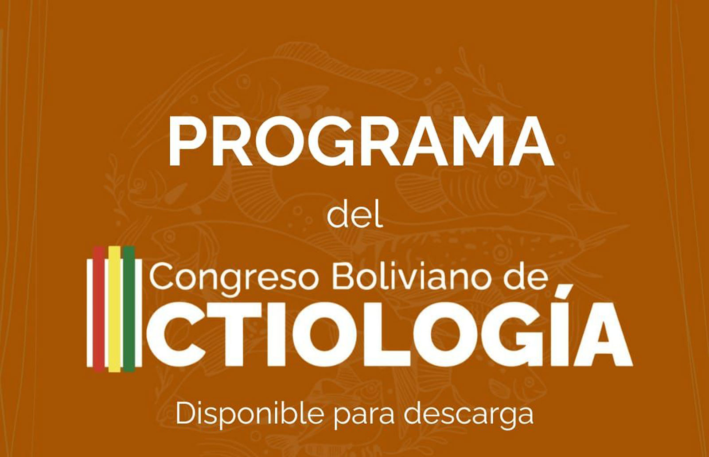

27 de noviembre de 2025 — Sala TAMBAQUI, La Paz
Ver programa y horarios (PDF)
IcTiosCusco participará en el III Congreso Boliviano de Ictiología y en el curso precongreso
Horario de intervenciones (misma jornada)
Jueves, 27 de noviembre de 2025 — Sala TAMBAQUI
15:30 — Getsemaní Pérez
Caracterización de poblaciones de Trichomycterus sp. (Ancahuasi, Cachimayo, Ccorca, Enaco, Languilayo, Pillao Matao, Huasao).
Caracterización de poblaciones de Trichomycterus sp. (Ancahuasi, Cachimayo, Ccorca, Enaco, Languilayo, Pillao Matao, Huasao).
17:15 — Dr. Marco A. Méndez
Ponencia magistral C4: "Integrando perspectivas para estudiar la divergencia de las especies del Altiplano".
Ponencia magistral C4: "Integrando perspectivas para estudiar la divergencia de las especies del Altiplano".
17:30 — Jack Malon Rodríguez
Variabilidad morfológica en poblaciones del género Orestias en lagunas altoandinas del Cusco.
Variabilidad morfológica en poblaciones del género Orestias en lagunas altoandinas del Cusco.
Los miembros de IcTiosCusco participarán también en el curso precongreso "Introducción al análisis filogenético y filogeográfico" (22, 24 y 25 de noviembre) y en las sesiones técnicas del congreso en La Paz. Instructores del curso: Dr. Marco A. Méndez Torres y MSc. Viviana Araya Enero (Universidad de Chile). Además de las ponencias indicadas, el equipo participará en mesas y sesiones de discusión sobre conservación y biogeografía andina.